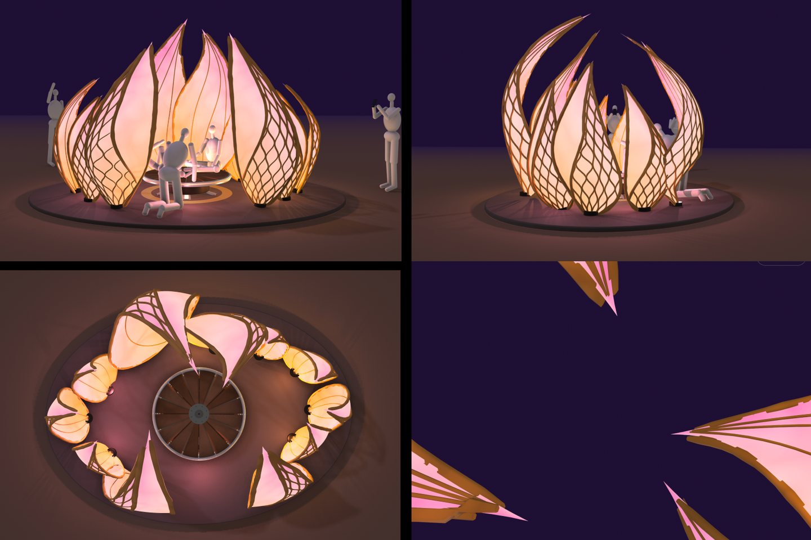

In development · 2027
Blossom
A proposed lotus sculpture that comes alive through light, a carousel, and people playing together.
Explore the art project

Art, culture & community
We bring people together through cultural exchange, participatory art, music, and well-being—in the Bay Area and beyond.
In development · 2027
A proposed lotus sculpture that comes alive through light, a carousel, and people playing together.
Explore the art projectCommunity offerings
Freshly made savory tofu, air cupping, and a welcoming place to gather on the playa.
See our offerings
Past project · 2025
A rideable mechanical koi and shared art experience, created by our founding community.
View the projectIn development
Also taking shape: public yoga sessions and DJ-led music gatherings. See what’s underway →


About Lovana Project
Before Lovana Project became a nonprofit, we were friends building art and camp together at Burning Man. Through rain, mud, and dust, we learned to trust one another—and found a community worth carrying beyond the desert.
Today, we bring that spirit to public art, cultural exchange, music, and well-being. Rooted in Chinese hospitality and Asian cultural traditions, we make room for people of every background to create, contribute, and connect.
Read our story →Join a project, share your skills, or support our public programs.
Want to collaborate? jasonwang.connect@gmail.com